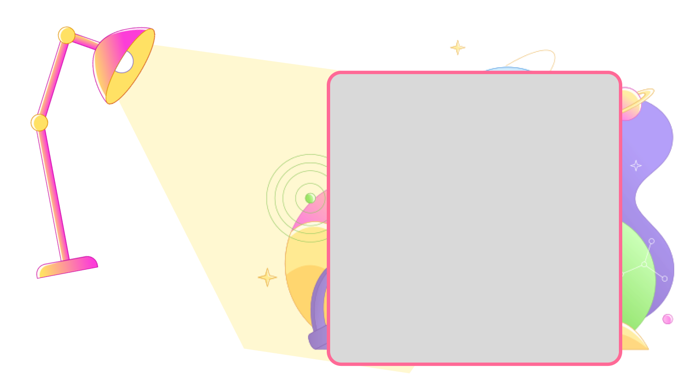
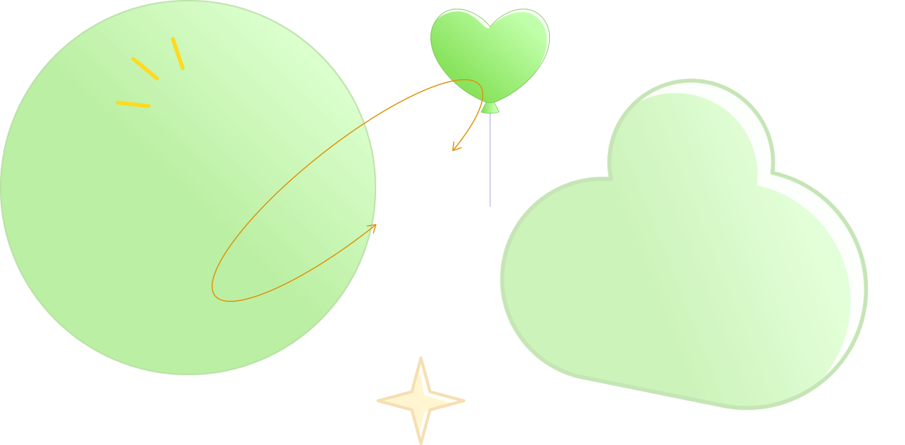

지울림이란?
<지울림>은 서일대학교 미디어출판학과의 벤처창업동아리이자 잡지 제작 동아리이다.

<지울림>은 서일대학교 미디어출판학과의 벤처창업동아리이자 잡지 제작 동아리이다.
지울림의 ‘지’는 한자 ‘종이 지(紙)’이며, ‘울림’은 ‘소리가 무엇에 부딪혀 되울려 나오는 형상 또는 그 소리’를 뜻하는 명사로, “종이를 통해 우리의 뜻이 반향을 불러 일으킨다”는 뜻을 담고 있다.

지울림 동아리는 잡지 <지울림>을 제작하며 출판에 관한 지식을 처음부터 배우며, 실무 작업을 통해 출판 전문가로 성장할 기회를 지닐 수 있는 동아리이다.

<지울림>의 첫 만남 오리엔테이션 사진이다.
지울림의 모든 부원과 임원단이 모였다.
2024년 0월 00일
무가지
정보제공
연구 및 기획
: 값을 지불하지 않고도 유용한 정보를 얻을 수 있어 사람들의 선호도가 높아 독자층의 확보가 가능하다.
: 다양한 정보를 얻기 위해 인터넷을 찾아보지 않아도 잡지에서 제공하므로 독자들의 편의를 도울 수 있다.
: 지울림만이 갖고 잇는 참신한 아이디어로 독자들에게 공감을 받고, 새로운 시대를 나타내는 아이콘이 될 수 있도록 학생들이 직접 연구하며 기획을한다.

딱딱한 이미지를 지닌 기존의 책이 아닌, 대학생의 시선으로 바라본 다양하고 재밌는 콘텐츠를 통해 비교적 독자에게 쉽게 다가갈 수 있도록 한다. 전문인들을 위한 도서 잡지가 아닌, 일반인들을 위한 도서 잡지를 만드는 데에 초점을 두고 유용한 정보를 제공하는 무료 도서잡지이다.
2022
2023
2023년 지울림의 주제는 행복이었다. 행복을 뜻하는 세잎클로버를 메인 이미지로 잡아서 첫번째 잎, 두번째 잎, 세번째 잎으로 잡지 내용을 구성했다. 나를 표현하는 행복, 나와 함께하는 행복, 나의 하루를 채우는 행복에 대한 글을 작성하면서 부원과 자신의 행복은 무엇인지, 이 잡지를 통해 자신만의 방법으로 행복에 도달하는 법을 독자들에게 전하고자 했다.
2023년 지울림의 주제는 행복이었다. 행복을 뜻하는 세잎클로버를 메인 이미지로 잡아서 첫번째 잎, 두번째 잎, 세번째 잎으로 잡지 내용을 구성했다. 나를 표현하는 행복, 나와 함께하는 행복, 나의 하루를 채우는 행복에 대한 글을 작성하면서 부원과 자신의 행복은 무엇인지, 이 잡지를 통해 자신만의 방법으로 행복에 도달하는 법을 독자들에게 전하고자 했다.
2023년 지울림의 주제는 행복이었다. 행복을 뜻하는 세잎클로버를 메인 이미지로 잡아서 첫번째 잎, 두번째 잎, 세번째 잎으로 잡지 내용을 구성했다. 나를 표현하는 행복, 나와 함께하는 행복, 나의 하루를 채우는 행복에 대한 글을 작성하면서 부원과 자신의 행복은 무엇인지, 이 잡지를 통해 자신만의 방법으로 행복에 도달하는 법을 독자들에게 전하고자 했다.

2022년 서일대학교 벤처창업동아리 발표회 3위
2023년 서일대학교 벤처창업동아리 발표회 3위
2024년 서일대학교 벤처창업동아리 발표회 -위

2023.03 - 2025.02
이름 : 김나연, 학번 : 202201835
이메일주소 : kny5076@naver.com

2023년 지울림의 주제는 행복이었다. 행복을 뜻하는 세잎클로버를 메인 이미 지로 잡아서첫번째 잎, 두번째 잎, 세번째 잎으로 잡지 내용을 구성했다. 나를 표현하는 행복, 나와 함께하는 행복, 나의 하루를 채우는 행복에 대한 글을 작성하면서 부원과 자신의 행복은 무엇인지, 이 잡지를 통해 자신만의 방법으로 행복에 도달하는 법을 독자들에게 전하고자 했다.
2023년 지울림의 주제는 행복이었다. 행복을 뜻하는 세잎클로버를 메인 이미 지로 잡아서첫번째 잎, 두번째 잎, 세번째 잎으로 잡지 내용을 구성했다. 나를 표현하는 행복, 나와 함께하는 행복, 나의 하루를 채우는 행복에 대한 글을 작성하면서 부원과 자신의 행복은 무엇인지, 이 잡지를 통해 자신만의 방법으로 행복에 도달하는 법을 독자들에게 전하고자 했다.